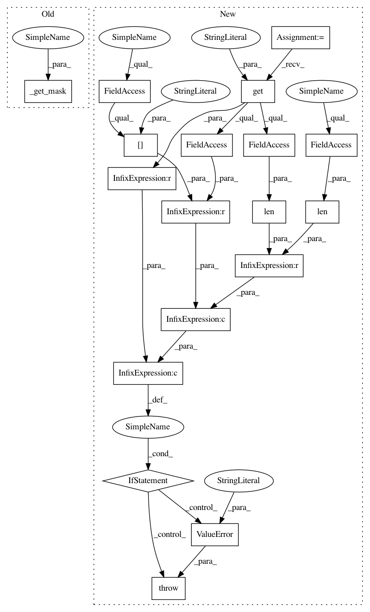

aee9922d07b5ba9462155da4127e241c4435edb5,art/attacks/evasion/projected_gradient_descent/projected_gradient_descent_numpy.py,ProjectedGradientDescentNumpy,generate,#ProjectedGradientDescentNumpy#Any#Any#,241
Before Change
targets = self._set_targets(x, y, classifier_mixin=False)
// Get the mask
mask = self._get_mask(x, **kwargs)
// Start to compute adversarial examples
if x.dtype == np.object:
adv_x = x.copy()
After Change
:type mask: `np.ndarray`
:return: An array holding the adversarial examples.
mask = kwargs.get("mask")
// Check the mask
if mask is not None and (len(mask.shape) > len(x.shape) or mask.shape != x.shape[-len(mask.shape):]):
raise ValueError("Mask shape must be broadcastable to input shape.")
// Check whether random eps is enabled
self._random_eps()
if isinstance(self.estimator, ClassifierMixin):
// Set up targets
In pattern: SUPERPATTERN
Frequency: 3
Non-data size: 18
Instances
Project Name: IBM/adversarial-robustness-toolbox
Commit Name: aee9922d07b5ba9462155da4127e241c4435edb5
Time: 2020-11-12
Author: beat.buesser@ie.ibm.com
File Name: art/attacks/evasion/projected_gradient_descent/projected_gradient_descent_numpy.py
Class Name: ProjectedGradientDescentNumpy
Method Name: generate
Project Name: IBM/adversarial-robustness-toolbox
Commit Name: aee9922d07b5ba9462155da4127e241c4435edb5
Time: 2020-11-12
Author: beat.buesser@ie.ibm.com
File Name: art/attacks/evasion/projected_gradient_descent/projected_gradient_descent_numpy.py
Class Name: ProjectedGradientDescentNumpy
Method Name: generate
Project Name: IBM/adversarial-robustness-toolbox
Commit Name: aee9922d07b5ba9462155da4127e241c4435edb5
Time: 2020-11-12
Author: beat.buesser@ie.ibm.com
File Name: art/attacks/evasion/projected_gradient_descent/projected_gradient_descent_pytorch.py
Class Name: ProjectedGradientDescentPyTorch
Method Name: generate
Project Name: IBM/adversarial-robustness-toolbox
Commit Name: aee9922d07b5ba9462155da4127e241c4435edb5
Time: 2020-11-12
Author: beat.buesser@ie.ibm.com
File Name: art/attacks/evasion/projected_gradient_descent/projected_gradient_descent_tensorflow_v2.py
Class Name: ProjectedGradientDescentTensorFlowV2
Method Name: generate